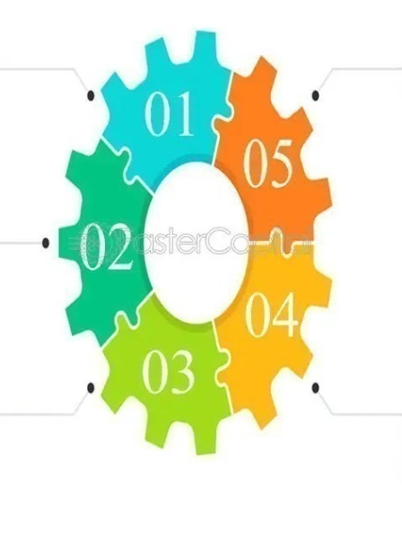

Visualisation des alertes en temps réel
- La couleur orange sur cette carte représente l’alerte de l’incendie. Cette Indication de la présence de fumée ou de chaleur excessive, signale un risque potentiel d'incendie. Il est crucial de vérifier immédiatement pour prévenir les dommages ou les dangers pour les personnes.
- La couleur bleu marque l’indication d’une alerte d’évacuation, et qu'une évacuation est nécessaire, généralement en réponse à un incident critique comme un incendie ou une menace à la sécurité. Les employés doivent suivre les procédures d'évacuation établies.
- L’alerte de maintenance quant à elle est sanctionnée par la couleur verte, notification que le système nécessite une maintenance régulière ou planifiée. Ces alertes aident à assurer que le système fonctionne à son efficacité optimale.
- Enfin, se positionne en dernier la couleur jaune, représentation de l’alerte de dysfonctionnement technique. Cette alerte décrit Problèmes techniques dans le système d'alarme, comme une panne de capteur, une perte de connexion, ou un problème d'alimentation. Ces alertes doivent être résolues rapidement pour garantir le bon fonctionnement du système.
accès rapide aux zones critiques
L’accès rapide aux zones critiques est une composante essentielle pour garantir une sécurité optimale des installations. Le système d'alarme automatisé est conçu pour identifier et surveiller en continu les zones sensibles, telles que les espaces de stockage de matières premières, les salles de serveurs, et les laboratoires de production aux moyens du décodage des couleurs. En cas de détection d'une menace potentielle, des alertes codées par des couleurs mentionnées ci-dessus sont générées et envoyées instantanément aux équipes de sécurité, ainsi qu'aux responsables concernés. Ces alertes incluent des informations détaillées, telles que la nature de l'incident, l'emplacement exact, et les mesures à prendre. L'intégration de ces fonctionnalités permet non seulement une réponse rapide aux incidents, mais aussi une analyse proactive des vulnérabilités. Cela renforce la capacité d'Unilever à protéger ses actifs critiques, à maintenir la continuité des opérations et à minimiser les risques pour les employés et les infrastructures. N°1 Le bleu : Alerte d'Évacuation N° 2 et 3 Vert : Alerte de Maintenance N°4 Orange : Alerte de Sécurité Incendie N°5 Rouge : Alerte d'Intrusion

graphique de performance
le graphique de performance met en lumière les améliorations notables apportées par l'automatisation du système d'alarme. Les données présentées montrent une réduction significative des temps de réponse aux incidents, passant de 15 minutes en janvier à 8 minutes en avril, ce qui reflète une meilleure réactivité et efficacité. De plus, le taux de fausses alertes a été réduit de manière drastique, passant de 25% à 5%, soulignant l'amélioration de la précision du système. Les économies de coûts opérationnels sont également mises en évidence, avec une réduction des dépenses trimestrielles de 100 000 € à 60 000 €, démontrant une gestion plus efficace des ressources. La productivité du personnel de sécurité a augmenté de 70% à 90%, illustrant une optimisation des tâches et une meilleure utilisation du personnel grâce à l'automatisation. Enfin, le taux de satisfaction des utilisateurs a montré des résultats positifs, avec 60% des utilisateurs se déclarant très satisfaits du nouveau système, ce qui indique une adoption réussie et une perception favorable de l'innovation. Ces graphiques de performance fournissent une vue d'ensemble claire et concise des bénéfices tangibles de l'automatisation pour Unilever, renforçant l'argument en faveur de cette transformation technologique. En définitive, nous obtenons un taux de disponibilité du système avec pour statistiques :
Taux de Disponibilité du Système d'Alarme :
- Avant l'automatisation : 95%
- Après l'automatisation : 99.9%